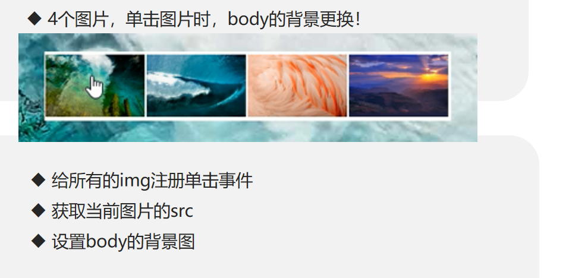
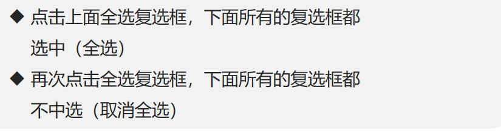
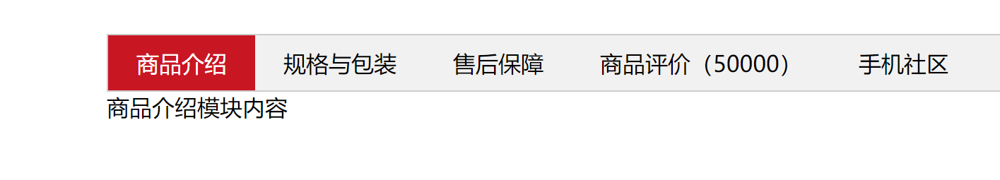
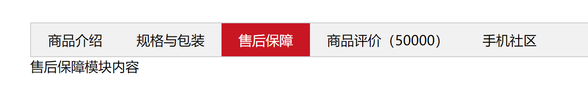
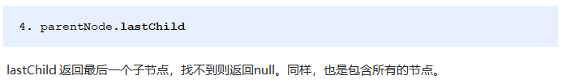

学习目标：
能够通过ID来获取元素
能够通过标签名来获取元素
能够通过class来获取元素
能够通过选择器来获取元素
能够获取body和html元素
能够给元素注册事件
能够修改元素的内容
能够区分innerText和innerHTML的区别
能够修改像div这类普通元素的属性
能够修改表单元素的属性
能够修改元素的样式属性
能够说出排他操作的一般实现步骤
能够使用html5中的dataset方式操作自定义属性
能够根据提示完成百度换肤的案例
能够根据提示完成全选案例
能够根据提示完成tab栏切换案例
能够区分元素节点、文本节点、属性节点
能够获取指定元素的父元素
能够获取指定元素的所有子元素
能够说出childNodes和children的区别
能够使用createElement创建页面元素
Web API介绍
Web API 是浏览器提供的一套操作浏览器功能和页面元素的 API ( BOM 和 DOM )。
现阶段我们主要针对于浏览器讲解常用的 API , 主要针对浏览器做交互效果。比如我们想要浏览器弹出一个警示框， 直接使用 alert
此处的 Web API 特指浏览器提供的一系列API(很多函数或对象方法)，即操作网页的一系列工具。例如：操作html标签、操作页面地址的方法。
DOM 介绍
文档对象模型（Document Object Model，简称DOM），是 W3C组织推荐的处理可扩展标记语言（html或者xhtml）的标准编程接口。
W3C 已经定义了一系列的 DOM 接口，通过这些 DOM 接口可以改变网页的内容、结构和样式。
DOM是W3C组织制定的一套处理 html和xml文档的规范，所有的浏览器都遵循了这套标准。
DOM树

DOM树 又称为文档树模型，把文档映射成树形结构，通过节点对象对其处理，处理的结果可以加入到当前的页面。
- 文档：一个页面就是一个文档，DOM中使用document表示
- 节点：网页中的所有内容，在文档树中都是节点（标签、属性、文本、注释等），使用node表示
- 标签节点：网页中的所有标签，通常称为元素节点，又简称为“元素”，使用element表示
获取元素
我们想要操作页面上的某部分(显示/隐藏，动画)，需要先获取到该部分对应的元素，再对其进行操作。
根据ID获取
语法：document.getElementById(id)
作用：根据ID获取元素对象
参数：id值，区分大小写的字符串
返回值：元素对象 或 null根据标签名获取元素
语法：document.getElementsByTagName('标签名') 或者 element.getElementsByTagName('标签名')
作用：根据标签名获取元素对象
参数：标签名
返回值：元素对象集合（伪数组，数组元素是元素对象）案例代码
<ul>
<li>haha</li>
<li>haha</li>
<li>haha</li>
<li>haha</li>
</ul>
<script>
var lis = document.getElementsByTagName("li");
console.log(lis.length);
for (var i = 0; i < lis.length; i++){
console.log(lis[i]);
}
</script>H5新增获取元素方式
document.getElementsByClassName //返回元素对象的集合
document.querySelector //返回选择器第一个元素对象
document.querySelectorAll //返回选择器案例代码
<body>
<div class="box">盒子1</div>
<div class="box">盒子2</div>
<div id="nav">
<ul>
<li>首页</li>
<li>产品</li>
</ul>
</div>
<script>
// 1. getElementsByClassName 根据类名获得某些元素集合
var boxs = document.getElementsByClassName('box');
console.log(boxs);
// 2. querySelector 返回指定选择器的第一个元素对象 切记 里面的选择器需要加符号 .box #nav
var firstBox = document.querySelector('.box');
console.log(firstBox);
var nav = document.querySelector('#nav');
console.log(nav);
var li = document.querySelector('li');
console.log(li);
// 3. querySelectorAll()返回指定选择器的所有元素对象集合
var allBox = document.querySelectorAll('.box');
console.log(allBox);
var lis = document.querySelectorAll('li');
console.log(lis);
</script>
</body>获取特殊元素（body，html）
document.body
document.documentElement事件基础
事件概述
JavaScript 使我们有能力创建动态页面，而事件是可以被 JavaScript 侦测到的行为。
简单理解： 触发— 响应机制。
网页中的每个元素都可以产生某些可以触发 JavaScript 的事件，例如，我们可以在用户点击某按钮时产生一个 事件，然后去执行某些操作。
事件三要素
- 事件源（谁）：触发事件的元素
- 事件类型（什么事件）： 例如 click 点击事件
- 事件处理程序（做啥）：事件触发后要执行的代码(函数形式)，事件处理函数
执行事件的步骤
- 获取事件源
- 注册/绑定事件
- 添加事件处理程序
常见的鼠标事件
| 事件 | 条件 |
|---|---|
| onclick | 鼠标点击左键触发 |
| onmouseover | 鼠标经过触发 |
| onmouseout | 鼠标离开触发 |
| onmousemove | 鼠标移动触发 |
| onmouseenter | 鼠标经过触发 |
| onmouseleave | 鼠标离开触发 |
| onfocus | 获得鼠标焦点触发 |
| onblur | 失去鼠标焦点触发 |
| onmouseup | 鼠标弹起触发 |
| onmousedown | 鼠标按下触发 |
操作元素
JavaScript的 DOM 操作可以改变网页内容、结构和样式，我们可以利用 DOM 操作元素来改变元素里面的内容、属性等。（注意：这些操作都是通过元素对象的属性实现的）
innerText和innerHTML的区别
- 获取内容时的区别：
innerText会去除空格和换行，而innerHTML会保留空格和换行
- 设置内容时的区别：
innerText不会识别html，而innerHTML会识别
案例代码
<body>
<button>显示当前系统时间</button>
<div>某个时间</div>
<p>1123</p>
<script>
// 当我们点击了按钮， div里面的文字会发生变化
// 1. 获取元素
var btn = document.querySelector('button');
var div = document.querySelector('div');
// 2.注册事件
btn.onclick = function() {
div.innerHTML = getDate();
}
function getDate() {
var date = new Date();
var year = date.getFullYear();
var month = date.getMonth() + 1;
var dates = date.getDate();
var arr = ['星期日', '星期一', '星期二', '星期三', '星期四', '星期五', '星期六'];
var day = date.getDay();
return '今天是：' + year + '年' + month + '月' + dates + '日 ' + arr[day];
}
</script>
</body><body>
<div></div>
<p>
我是文字
<span>123</span>
</p>
<script>
// innerText 和 innerHTML的区别
// 1. innerText 不识别html标签 非标准 去除空格和换行
var div = document.querySelector('div');
// div.innerText = '<strong>今天是：</strong> 2022';
// 2. innerHTML 识别html标签 W3C标准 保留空格和换行的
div.innerHTML = '<strong>今天是：</strong> 2022';
// 这两个属性是可读写的 可以获取元素里面的内容
var p = document.querySelector('p');
console.log(p.innerText);
console.log(p.innerHTML);
</script>
</body>除此之外，还有常见的src，href，id，alt等
样式属性操作
我们可以通过 JS 修改元素的大小、颜色、位置等样式。
element.style //行内样式操作
element.className //类名样式操作案例代码
<body>
<div></div>
<script>
// 1. 获取元素
var div = document.querySelector('div');
// 2. 注册事件 处理程序
div.onclick = function() {
// div.style里面的属性 采取驼峰命名法
this.style.backgroundColor = 'purple';
this.style.width = '250px';
}
</script>
</body>案例：仿京东显示密码
<body>
<div class="box">
<label for="">
<img src="images/close.png" alt="" id="eye">
</label>
<input type="password" name="" id="pwd">
</div>
<script>
// 1. 获取元素
var eye = document.getElementById('eye');
var pwd = document.getElementById('pwd');
// 2. 注册事件 处理程序
var flag = 0;
eye.onclick = function() {
// 点击一次之后， flag 一定要变化
if (flag == 0) {
pwd.type = 'text';
eye.src = 'images/open.png';
flag = 1; // 赋值操作
} else {
pwd.type = 'password';
eye.src = 'images/close.png';
flag = 0;
}
}
</script>
</body>案例：显示隐藏文本框内容
<body>
<input type="text" value="手机">
<script>
// 1.获取元素
var text = document.querySelector('input');
// 2.注册事件 获得焦点事件 onfocus
text.onfocus = function() {
// console.log('得到了焦点');
if (this.value === '手机') {
this.value = '';
}
// 获得焦点需要把文本框里面的文字颜色变黑
this.style.color = '#333';
}
// 3. 注册事件 失去焦点事件 onblur
text.onblur = function() {
// console.log('失去了焦点');
if (this.value === '') {
this.value = '手机';
}
// 失去焦点需要把文本框里面的文字颜色变浅色
this.style.color = '#999';
}
</script>
</body>排他操作
如果有同一组元素，我们想要某一个元素实现某种样式， 需要用到循环的排他思想算法：
所有元素全部清除样式（干掉其他人）
给当前元素设置样式 （留下我自己）
注意顺序不能颠倒，首先干掉其他人，再设置自己
案例：百度换肤
<body>
<ul class="baidu">
<li><img src="images/1.jpg"></li>
<li><img src="images/2.jpg"></li>
<li><img src="images/3.jpg"></li>
<li><img src="images/4.jpg"></li>
</ul>
<script>
// 1. 获取元素
var imgs = document.querySelector('.baidu').querySelectorAll('img');
// console.log(imgs);
// 2. 循环注册事件
for (var i = 0; i < imgs.length; i++) {
imgs[i].onclick = function() {
// this.src 就是我们点击图片的路径 images/2.jpg
// console.log(this.src);
// 把这个路径 this.src 给body 就可以了
document.body.style.backgroundImage = 'url(' + this.src + ')';
}
}
</script>
</body>案例：全选
<script>
// 1. 全选和取消全选做法： 让下面所有复选框的checked属性（选中状态） 跟随 全选按钮即可
// 获取元素
var j_cbAll = document.getElementById('j_cbAll'); // 全选按钮
var j_tbs = document.getElementById('j_tb').getElementsByTagName('input'); // 下面所有的复选框
// 注册事件
j_cbAll.onclick = function() {
// this.checked 它可以得到当前复选框的选中状态如果是true 就是选中，如果是false 就是未选中
console.log(this.checked);
for (var i = 0; i < j_tbs.length; i++) {
j_tbs[i].checked = this.checked;
}
}
// 2. 下面复选框需要全部选中， 上面全选才能选中做法： 给下面所有复选框绑定点击事件，每次点击，都要循环查看下面所有的复选框是否有没选中的，如果有一个没选中的， 上面全选就不选中。
for (var i = 0; i < j_tbs.length; i++) {
j_tbs[i].onclick = function() {
// flag 控制全选按钮是否选中
var flag = true;
// 每次点击下面的复选框都要循环检查者4个小按钮是否全被选中
for (var i = 0; i < j_tbs.length; i++) {
if (!j_tbs[i].checked) {
flag = false;
break; // 退出for循环 这样可以提高执行效率 因为只要有一个没有选中，剩下的就无需循环判断了
}
}
j_cbAll.checked = flag;
}
}
</script>自定义属性操作
获取属性值
element.属性 //获取内置属性
element.getAttribute('属性') //获得程序员自定义的属性设置属性值
element.属性 = 值
element.getAttribute('属性','值') 移出属性
element.removeAttribute(属性) 案例：Tab栏
<script>
var lis = document.querySelectorAll('li');
var items = document.querySelectorAll('.item');
for (var i = 0; i <lis.length; i++) {
lis[i].setAttribute('index', i);
lis[i].onclick = function() {
for (var i = 0; i < lis.length; i++) {
lis[i].className = ''
}
console.log(index);
for (var j = 0; j < items.length; j++) {
items[j].style.display = 'none';
}
items[index].style.display = 'block';
}
}
</script>效果图
 H5自定义属性
自定义属性目的：是为了保存并使用数据。有些数据可以保存到页面中而不用保存到数据库中。
自定义属性获取是通过getAttribute(‘属性’) 获取。
但是有些自定义属性很容易引起歧义，不容易判断是元素的内置属性还是自定义属性。
H5给我们新增了自定义属性：H5规定自定义属性data-开头作为属性名并且赋值。
<div getTime="20" data-index="2" data-list-name="andy"></div>节点操作
网页中的所有内容都是节点（标签、属性、文本、注释等），在DOM 中，节点使用 node 来表示。
HTML DOM 树中的所有节点均可通过 JavaScript 进行访问，所有 HTML 元素（节点）均可被修改，也可以创建或删除。

一般地，节点至少拥有nodeType（节点类型）、nodeName（节点名称）和nodeValue（节点值）这三个基本属性。
节点层级
利用 DOM 树可以把节点划分为不同的层级关系，常见的是父子兄层级关系。

父级节点
node.parentNode- parentNode属性可返回某节点的父节点，最近的一个父节点
- 没有父节点则返回null
案例代码
<div class="demo">
<div class="box">
<span class="erweima">×</span>
</div>
</div>
<script>
// 1. 父节点 parentNode
var erweima = document.querySelector('.erweima');
// var box = document.querySelector('.box');
// 得到的是离元素最近的父级节点(亲爸爸) 如果找不到父节点就返回为 null
console.log(erweima.parentNode);
</script>返回的即是class为box
子节点
node.childNodes //返回包含指定节点的子节点的集合，该集合为即时更新的集合
node.childern //只返回子元素节点，其余节点不返回案例代码
<ul>
<li>我是li</li>
<li>我是li</li>
<li>我是li</li>
<li>我是li</li>
</ul>
<script>
// DOM 提供的方法（API）获取
var ul = document.querySelector('ul');
var lis = ul.querySelectorAll('li');
// 1. 子节点 childNodes 所有的子节点 包含 元素节点 文本节点等等
console.log(ul.childNodes);
console.log(ul.childNodes[0].nodeType);
console.log(ul.childNodes[1].nodeType);
// 2. children 获取所有的子元素节点 也是我们实际开发常用的
console.log(ul.children);
</script>第1个子节点

最后1个子节点
第1个子元素节点

最后1个子元素节点

实际开发中，firstChild 和 lastChild 包含其他节点，操作不方便，而 firstElementChild 和 lastElementChild 又有兼容性问题，那么我们如何获取第一个子元素节点或最后一个子元素节点呢？
>parentNode.children[0] //第一个节点 >parentNode.children[parentNode.children.length-1] //获取最后一个节点
创建节点
document.creatElement('tagName')添加节点
node.appendChild(child)
node.insertBefore(child,指定元素)代码案例
<body>
<ul>
<li>123</li>
</ul>
<script>
// 1. 创建节点元素节点
var li = document.createElement('li');
// 2. 添加节点 node.appendChild(child) node 父级 child 是子级 后面追加元素 类似于数组中的push
var ul = document.querySelector('ul');
ul.appendChild(li);
// 3. 添加节点 node.insertBefore(child, 指定元素);
var lili = document.createElement('li');
ul.insertBefore(lili, ul.children[0]);
// 4. 我们想要页面添加一个新的元素 ： 1. 创建元素 2. 添加元素
</script>
</body>删除节点
node.removeChild() //方法从 node节点中删除一个子节点，返回删除的节点。复制（克隆）节点
node.cloneNode() //返回调用该方法的节点的一个副本
//括号为空或者里面是false 浅拷贝 只复制标签不复制里面的内容
//括号为true 深拷贝 复制标签复制里面的内容案例代码
<ul>
<li>1</li>
<li>2</li>
<li>3</li>
</ul>
<script>
var ul = document.querySelector('ul');
var lili = ul.children[0].cloneNode(true);
ul.appendChild(lili);
</script>案例：动态生成表格
表格的行数是动态的
<body>
<table cellspacing="0">
<thead>
<tr>
<th>姓名</th>
<th>科目</th>
<th>成绩</th>
<th>操作</th>
</tr>
</thead>
<tbody>
</tbody>
</table>
<script>
// 1.先去准备好学生的数据
var datas = [{
name: '小张',
subject: 'JavaScript',
score: 100
}, {
name: '小红',
subject: 'JavaScript',
score: 98
}, {
name: '小马',
subject: 'JavaScript',
score: 99
}, {
name: '小玉',
subject: 'JavaScript',
score: 88
}, {
name: '小张',
subject: 'JavaScript',
score: 0
}];
// 2. 往tbody 里面创建行： 有几个人（通过数组的长度）我们就创建几行
var tbody = document.querySelector('tbody');
for (var i = 0; i < datas.length; i++) { // 外面的for循环管行 tr
// 1. 创建 tr行
var tr = document.createElement('tr');
tbody.appendChild(tr);
// 2. 行里面创建单元格(跟数据有关系的3个单元格) td 单元格的数量取决于每个对象里面的属性个数 for循环遍历对象 datas[i]
for (var k in datas[i]) { // 里面的for循环管列 td
// 创建单元格
var td = document.createElement('td');
// 把对象里面的属性值 datas[i][k] 给 td
// console.log(datas[i][k]);
td.innerHTML = datas[i][k];
tr.appendChild(td);
}
// 3. 创建有删除2个字的单元格
var td = document.createElement('td');
td.innerHTML = '<a href="javascript:;">删除 </a>';
tr.appendChild(td);
}
// 4. 删除操作 开始
var as = document.querySelectorAll('a');
for (var i = 0; i < as.length; i++) {
as[i].onclick = function() {
// 点击a 删除 当前a 所在的行(链接的爸爸的爸爸) node.removeChild(child)
tbody.removeChild(this.parentNode.parentNode)
}
}
</script>
</body>三种创建元素方式区别
- document.write() 创建元素 如果页面文档流加载完毕，再调用这句话会导致页面重绘
- innerHTML 创建元素
- document.createElement() 创建元素